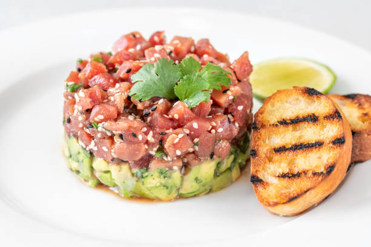

<!DOCTYPE html>
<html lang="en">
    <meta charset = "UTF-8">
    <meta name = "viewport" content = "width=device-width, initial-scale=1.0">
    <title>Menu</title>
    <link rel= "stylesheet" href= "styles/style.css">
</html>
<body>
    <header>
        <h1>YOMSUSH</h1>
        <nav>
            <ul>
                <li><a href= "Inicio.html">Inicio</a></li>
                <li><a href= "Historia.html">Nuestra Historia</a></li>
                <li><a href= "Menuplatillos.html">Nuestro Menu</a></li>
            </ul>
        </nav>
    </header>
    <main>
        <section id= "Menu">
            <h2>Nuestro Menu</h2>

            <section class="categoria">
                <h3>Entradas</h3>
                <div class="platillo">
                    
                    <h4>Edamame al Vapor</h4>
                    <p> Vainas de soja frescas al vapor, espolvoreadas con sal marina.</p>
                    <p class="precio">$100 MXN</p>
                </div>
                <div class="platillo">
                    
                    <h4>Tartar de Atún y Aguacate</h4>
                    <p> Dados de atún fresco mezclados con aguacate, servidos sobre una cama de alga wakame con un toque de salsa ponzu.</p>
                    <p class="precio">$180 MXN</p>
                </div>
                <div class="platillo">
                    
                    <h4>Tempura de Verduras</h4>
                    <p> Crujientes tempura de zanahoria, batata, y brócoli, acompañadas de una salsa tentsuyu.</p>
                    <p class="precio">$135 MXN</p>
                </div>
            </section>
            
            <section class="categoria">
                <h3>Platos Fuertes</h3>
                <div class="platillo">
                    
                    <h4>Sushi Surtido Especial</h4>
                    <p> Una selección de nigiris, sashimis y makis, incluyendo salmón, atún, y anguila, acompañados de wasabi y jengibre encurtido.</p>
                    <p class="precio">$340 MXN</p>
                </div>
                <div class="platillo">
                    
                    <h4>Rollos Dragón</h4>
                    <p> Rollos de sushi rellenos de camarón tempurizado, pepino y aguacate, cubiertos con un manto de anguila y salsa unagi.</p>
                    <p class="precio">$260 MXN</p>
                </div>
                <div class="platillo">
                    
                    <h4>Donburi de Salmón Teriyaki</h4>
                    <p> Filete de salmón asado a la parrilla con salsa teriyaki, servido sobre un cuenco de arroz blanco con verduras frescas.</p>
                    <p class="precio">$310 MXN</p>
                </div>
            </section>
            
            <section class="categoria">
                <h3>Bebidas</h3>
                <div class="platillo">
                    
                    <h4>Té Verde Matcha</h4>
                    <p> Té verde japonés en polvo servido caliente o frío, con su distintivo sabor suave y ligeramente amargo.</p>
                    <p class="precio">$70 MXN</p>
                </div>
                <div class="platillo">
                    
                    <h4>Sake Frío</h4>
                    <p> Bebida tradicional japonesa de arroz fermentado, servida fría para realzar sus notas afrutadas.</p>
                    <p class="precio">$115 MXN</p>
                </div>
                <div class="platillo">
                    
                    <h4>Limonada de Jengibre y Yuzu</h4>
                    <p> Refrescante limonada mezclada con jengibre fresco y un toque de yuzu, un cítrico japonés.</p>
                    <p class="precio">$90 MXN</p>
                </div>
            </section>            
        </section>
        <footer>&copy; 2024 Yomsush</footer>
    </main>
</body>